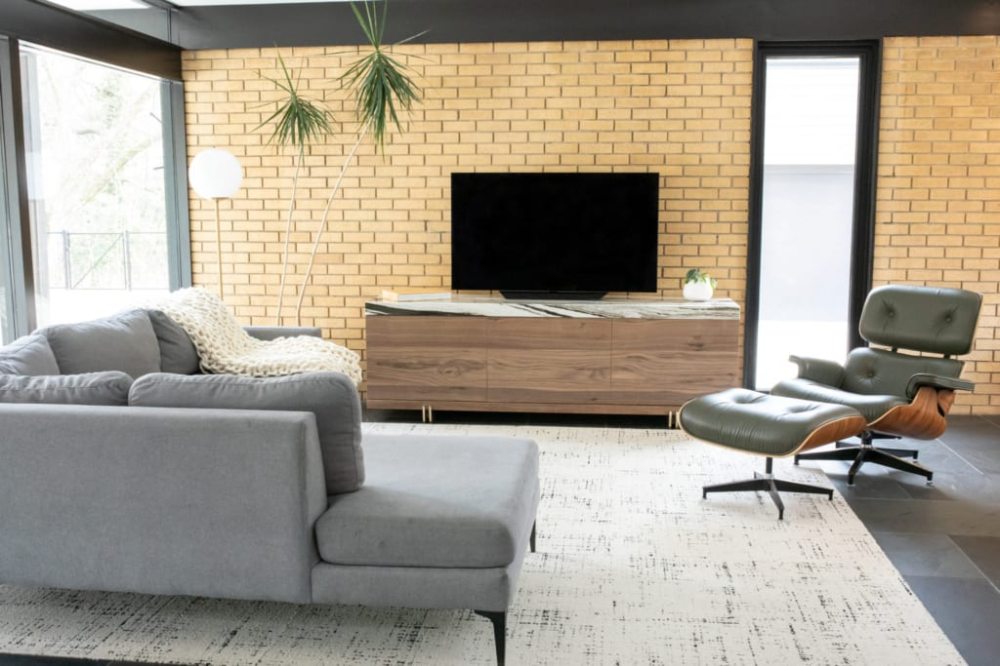
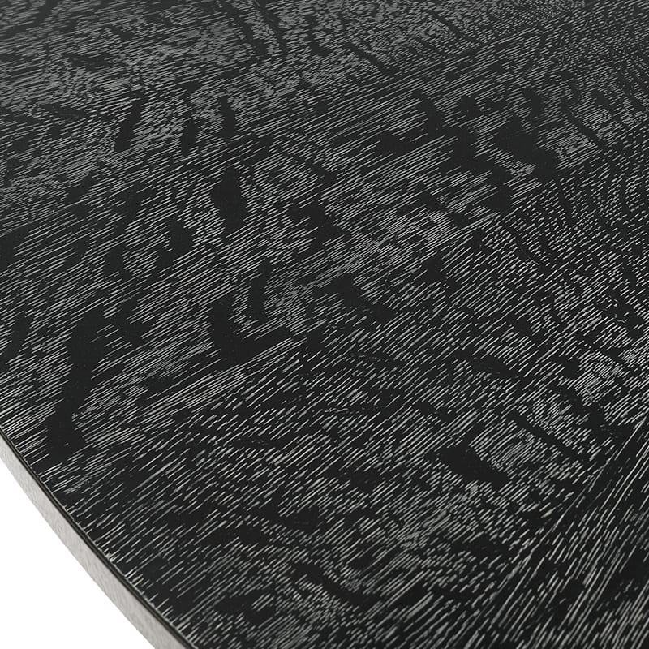
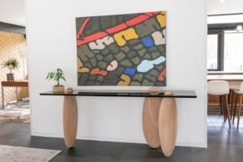

What finishes are, why they matter, and how to choose the right one.

Choosing materials, dimensions, finishes, and working with craftsmen.

Understanding the characteristics and benefits of three curated woods.